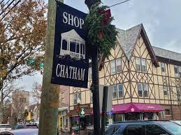

Section about me
Hello everybody, and welcome to my page! My name is E.J. Leskauskas, and I am currently a senior at Michigan State University studying Information Science with a concentration in Human-Centered Technologies. I am originally from a small town in New Jersey named Chatham. I grew up with two siblings and a dog named Banks. I have an older sister named Megan and a younger brother named John.

I came to Michigan State because I wanted to get out and explore the world and see what else America had to offer! I originally got into the pre-law program at MSU, and I knew this was the place for me. I studied Political Science for a year and decided that it was something I loved. My Junior year, I found Information Science, and I have loved it ever since.
At MSU I studied:
- Political Science Pre-Law
- Statistics
- Computer Science
- Information Science
Coming to Michigan from New Jersey was difficult because I would be so far from my family and my home. I am glad I decided to go to Michigan and share my great experiences at Michigan State University. If you want to keep up to date with me and my new life in Michigan, this is the blog for you!